Main takeaway
Don’t only use the default option.
Use what suits you the best.
2026-09-24
PhD student in demography, University of Geneva
President, WeData
Vice president, regional lead, Young AI Leaders Geneva
Don’t only use the default option.
Use what suits you the best.
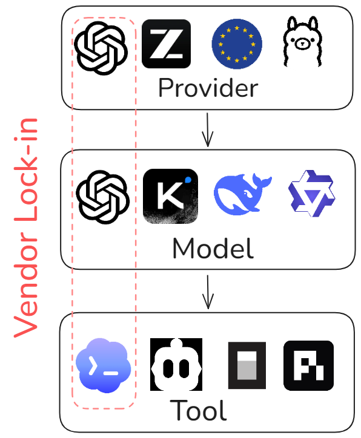
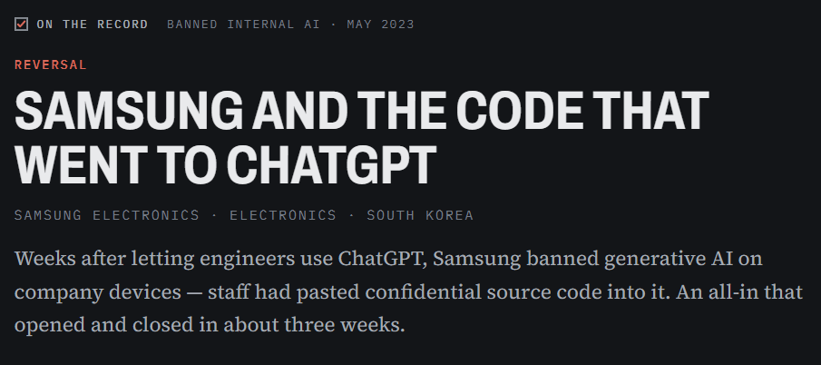
AI Incident Database, May 2, 2023 | Bankrupt by AI, March 30, 2023
Those engineers used the default.
The default was chosen for them.
6 of 6 major US chatbot companies train on your chats by default
Some keep your data indefinitely.
Privacy documentation is often unclear.
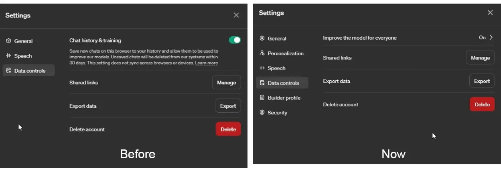
OpenAI Finally Relents; You Can Disable Model Training in ChatGPT While Retaining Chat History
Data training
OFF by default
ON by default
OpenAI Help Center, “What if I want to disable model training?”
Now everything is under multiple lines of privacy documents
Useful for quiet consent
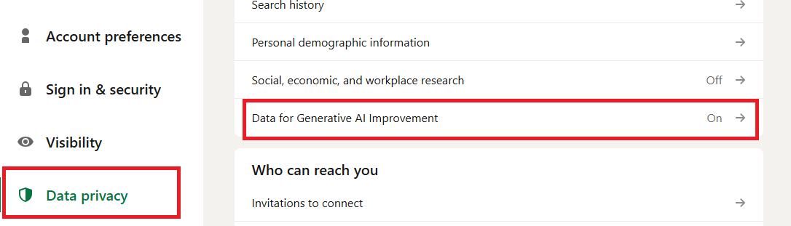
LinkedIn will use your data to train its AI unless you opt out now, September 2025 | X Adds New Setting To Opt out of Sharing Data To Train Grok
The problem is not the data training…
But the quiet consent
And the retention practices
It is the ability to control where your data goes, who sees it, and which laws apply to it when you use artificial intelligence.
Data sovereignty ≠ tech sovereignty
How far does your data physically travel?
What happens to your prompt after the model reads it?
What happens to your prompt after the model reads it?
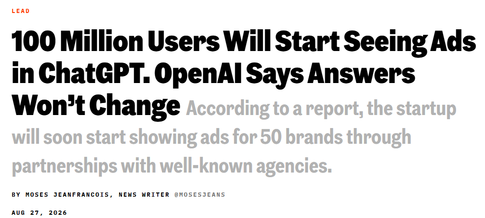
What happens to your prompt after the model reads it?
Profiling: your inputs build a longitudinal profile linked to your account
Training: no longer your data, it’s someone else’s weights
OpenAI rejected direct access to the files, but admitted their AI had been trained on it
What laws might require your data disclosed?
The CLOUD Act, 2018 (USA):
an American provider must hand over data, “regardless of whether such communication is located within or outside of the United States.”
What counts is who controls the provider, the server’s location is legally irrelevant.
The CLOUD Act: A Plain-English Guide to Your Data & Government Access
The Cybersecurity Law, 2017 (China)
providers must cooperate with state security investigations, provide technical support and decryption capabilities, and store “important data” on servers inside China.
Here, the server location matters: it must be physically in China for most AI workloads.
General Data Protection Regulation (GDPR)
Requires data to stay in the EEA (or have specific transfer mechanisms) and limits transfers to countries without “adequate” protection.
A company can be 100% GDPR-compliant (having a public DPA, zero retention policies, and EU staff) but still be subject to the US CLOUD Act if it has a US parent company
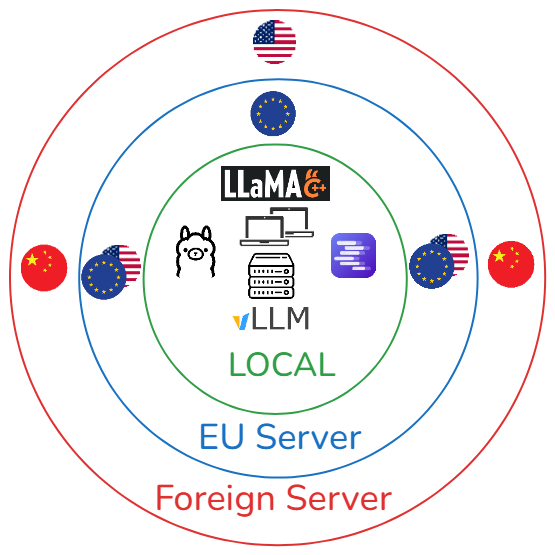
All three axes overlap
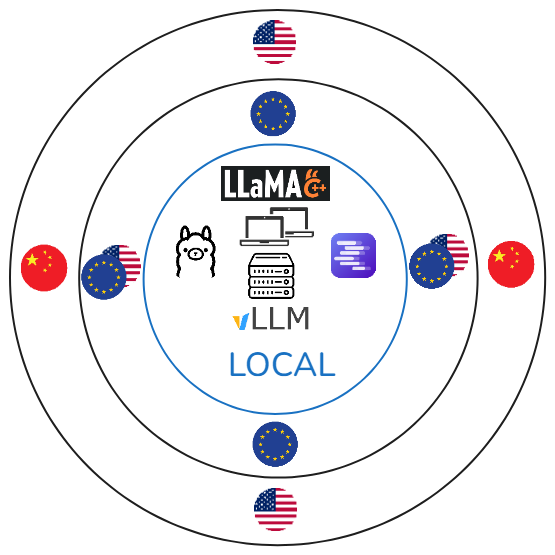
Local
Defense, state secrets, classified
Sensitive data, things that should never leave your computer, …
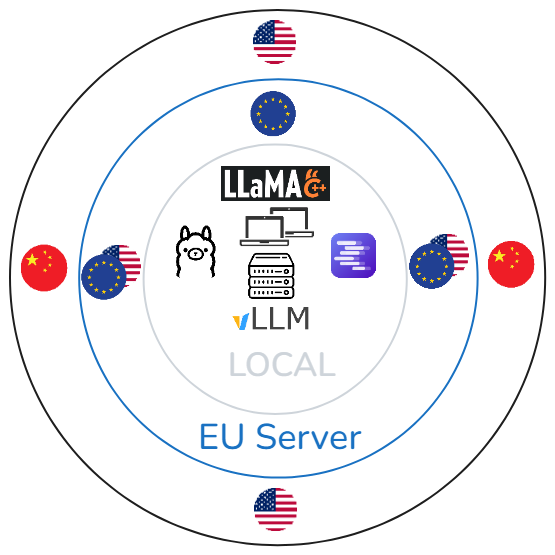
EU server
Personal data (standard GDPR)
Customer records, employee data, anything with names attached
Regulated data
Health data, banking secrecy, legal privilege, HR investigations Zero data retention
Intellectual property
Source code, unreleased designs, the Samsung data encryption/zero data retention
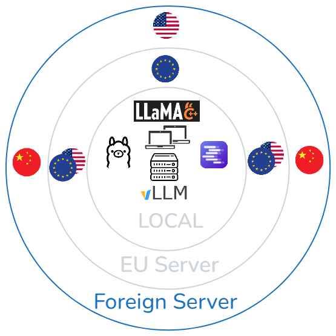
Foreign server
Already public data.
Marketing copy drafts, published documentation, generic research, …
Internal, non-personal, non-secret
Meeting notes that will be published anyway, non-critical internal comms.
Open-weight model
Free model that you can download and use, and you can modify by fine-tuning. (Llama, Qwen, Kimi, GLM, …)
Open-weight ≠ open-source (+ data and documented steps)
Closed model
Owned by a company, the model is non-transparent. (GPT, Claude, Grok, …)
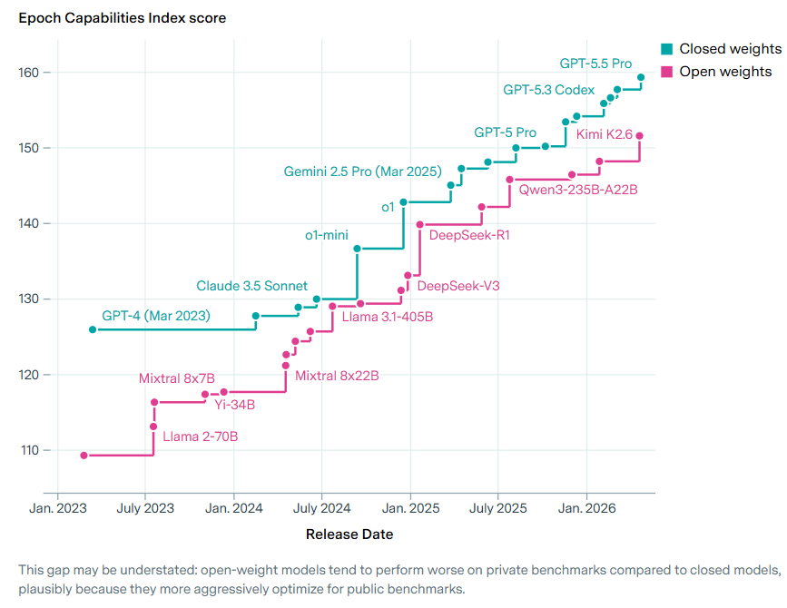
Then: “Like GPT-3 vs GPT-5” - different eras
Now: “Like GPT-5 vs GPT-5.5” - same era, minor version
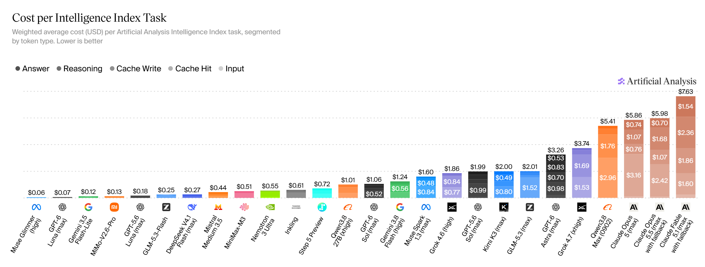
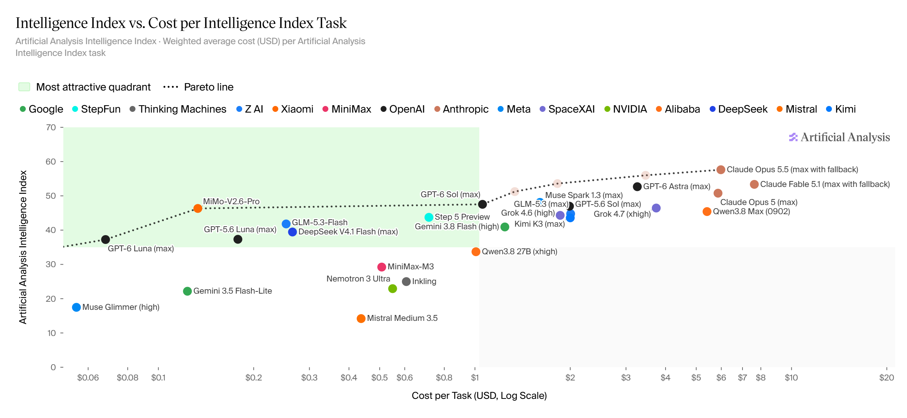
Kimi K3 - Largest open model ever
Qwen3.8-27B - Single consumer GPU
GLM5.3 - Max: frontier performance, Flash: fast and really cheap
1. Cheapest per token ≠ cheapest per task
2. Benchmarks may flatter open models (benchmark gaming)
3. Agentic tool use remains a gap
1. Self-hosted: absolute control, your hardware. Zero data leaves.
2. Full-stack European clouds: European owners, European stacks.
3. GPU neoclouds: European or hybrid compute, bring your own models. Jurisdiction varies.
4. Routers and gateways: one European legal wrapper, many models underneath.
5. Wrapped hyperscalers: a European mask over American machinery.
Download the tool
Download the model
Run everything locally
Pros:
Cons:
Resources to get started on local models
European-owned infrastructure offering native AI endpoints and some allow to bring your own model.
Pros:
Cons:
OVHcloud | Scaleway | STACKIT | T Cloud Public | OUTSCALE | Cloud Temple | NumSpot | IONOS | Exoscale | Infomaniak
Specialized compute providers focusing on raw GPU power, often allowing you to bring your own model (BYOM).
Verda | Nebius | Nscale | CloudFerro | Berget AI (UK jurisdiction)
Pros:
Cons:
Verda | Nebius | Nscale | CloudFerro | Berget AI (UK jurisdiction)
Services that sit between you and multiple backend providers, routing requests based on your rules.
Pros:
Cons:
S3NS | Bleu | AWS European Sovereign Cloud | Azure EU Data Boundary
Pros:
Cons:
S3NS | Bleu | AWS European Sovereign Cloud | Azure EU Data Boundary
| Category | Options | Distance (data flow) | Retention (what they keep) | Jurisdiction (legal shield) | |
|---|---|---|---|---|---|
| 1. Self-hosted | Ollama, LM Studio, vLLM, llama.cpp, SGLang | Local (your machine) | Zero (unless you enable history/logs) | Your jurisdiction (physical control) | |
| 2. Full-stack EU clouds | OVHcloud, Scaleway, STACKIT, T Cloud Public, OUTSCALE, Cloud Temple, NumSpot, IONOS, Exoscale, Infomaniak | EU (data stays in EU data centers) | Configurable (most offer “zero retention” or strict “no training” options; check specific SLA) | EU (protected from CLOUD Act; governed by EU courts) | |
| 3. GPU neoclouds | Verda, Nebius, Nscale, CloudFerro, Berget AI | EU/UK (varies by region selection) | Variable (often zero retention for inference; check training policies) | Mixed (Nebius/Verda/CloudFerro: EU; Berget AI: UK) | |
| 4. Routers & gateways | cortecs, TextCortex, Requesty | EU (routing layer in EU) | Configurable (zero retention modes available) | EU (GDPR-native, but depends on upstream provider) | |
| 5. Wrapped hyperscalers | S3NS, Bleu, AWS EC, Azure EUD | EU (data physically in EU) | Variable (often retained for model improvement unless opted out) | US/global (parent company subject to CLOUD Act) |
Don’t only use the default option.
Use what suits you the best.